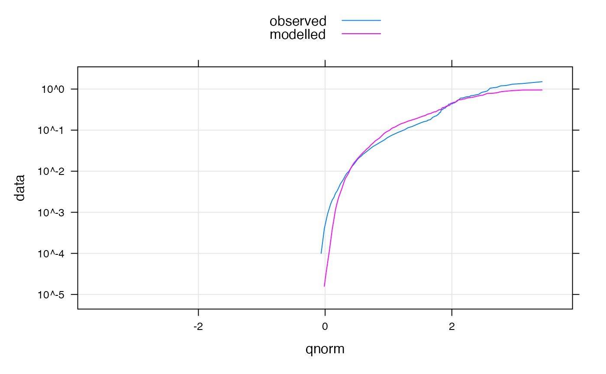

Plot methods...
# S3 method for hydromad plot(x, y, ...) # S3 method for hydromad xyplot( x, data = NULL, ..., scales = list(), feasible.bounds = FALSE, col.bounds = "grey80", border = "grey60", alpha.bounds = 1, all = FALSE, superpose = TRUE, with.P = FALSE, type = "l", type.P = c("h", if ("g" %in% type) "g"), layout = c(1, NA) ) # S3 method for hydromad.runlist xyplot( x, data = NULL, ..., scales = list(), all = FALSE, superpose = FALSE, with.P = FALSE, type = "l", type.P = c("h", if ("g" %in% type) "g"), layout = c(1, NA) ) # S3 method for hydromad qqmath( x, data = NULL, ..., all = FALSE, type = "l", auto.key = list(lines = TRUE, points = FALSE), f.value = ppoints(100), tails.n = 100 ) # S3 method for hydromad tsdiag(object, gof.lag, ...)
| x | an object of class |
|---|---|
| y | Placeholder for plot.hydromad |
| ... | further arguments passed on to |
| data | ignored. |
| scales | Placeholder |
| feasible.bounds | if |
| col.bounds, border, alpha.bounds | graphical parameters of the ensemble
simulation bounds if |
| all | passed to |
| superpose | to overlay observed and modelled time series in one panel. |
| with.P | to include the input rainfall series in the plot. |
| type | Placeholder |
| type.P | plot type for rainfall, passed to |
| layout | Placeholder |
| auto.key | Placeholder |
| f.value, tails.n | arguments to |
| object, gof.lag | passed to the |
the trellis functions return a trellis object.
hydromad.object, xyplot,
xyplot.ts, xyplot.list
Felix Andrews felix@nfrac.org
data(Canning) cannCal <- window(Canning, start = "1978-01-01", end = "1982-12-31") mod <- hydromad(cannCal, sma = "cwi", tw = 162, f = 2, l = 300, t_ref = 0, scale = 0.000284, routing = "expuh", tau_s = 4.3, delay = 1, warmup = 200 ) xyplot(mod, with.P = TRUE)c( streamflow = xyplot(mod), residuals = xyplot(residuals(mod, type = "h")), layout = c(1, 2), y.same = TRUE )xyplot(residuals(mod)) + latticeExtra::layer(panel.tskernel(..., width = 90, c = 2, col = 1)) + latticeExtra::layer(panel.tskernel(..., width = 180, c = 2, col = 1, lwd = 2)) + latticeExtra::layer(panel.tskernel(..., width = 360, c = 2, lwd = 2))